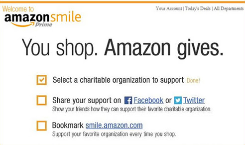
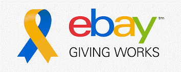

Blog Summary
1. Next time you are looking to make a purchase with Amazon, go to smile.amazon.com and log on with your regular Amazon or Amazon prime account. 2. Once you have logged on, search for Blue Card, Inc.
1. Next time you are looking to make a purchase with Amazon, go to smile.amazon.com and log on with your regular Amazon or Amazon prime account.
2. Once you have logged on, search for Blue Card, Inc. in the search bar under “select your own charitable organization“. Amazon Link: http://r20.rs6.net/tn.jsp?f=001UUF6kSAVfg05sI35Wr5nyLWe9BGR3p2A-zHNyfKO7IqxzeV9F_OeRpZfh-n9kvZbVBZhEysQ9836SuJO_OShm7lBVyfL921BcKybLfgDXuM0063o4sJ4-cmnZXxLBhvCp8ye3c3zUS-_p4hiqEmPtw==&c=&ch=
3. Once you have done that, Amazon will donate .5% of your eligible purchases to The Blue Card!
Every dollar counts especially during these challenging times. Thank you for your generosity and continued support of our urgent mission! Shop on Amazon? Designate The Blue Card as charity of your choice and a percentage of your order will be donated to help Holocaust survivors in need Click on Ebay Giving - http://r20.rs6.net/tn.jsp?f=001UUF6kSAVfg05sI35Wr5nyLWe9BGR3p2A-zHNyfKO7IqxzeV9F_OeRkTZjBAxT0-YSfkezd3_kXxmmEC5zUiAuSJwqlaLPEHcL2RJlr3FX3mIexJ09MEG2zT1W4mWPxdwWMrYnJwWEu0pUED1e4uTRnTxRfgdxszHLYBRLCJ75Vh-KiU6zoUYlVG8sdBJsQF_6cEwgly1sto=&c=&ch=

